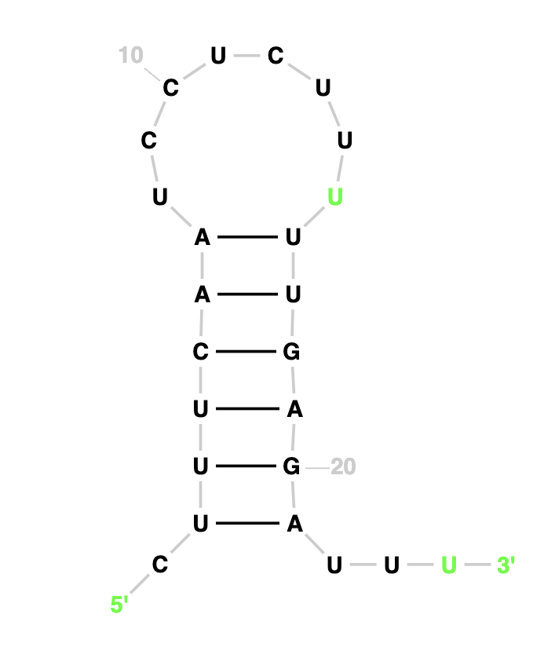

Analysis: On comparing the original structure with the observed one, we note a disparity in their configurations. The original model features four bond pairs, comprising two A-U bonds and two G-C bonds. However, in the observed structure, there are five bond pairs, including an additional G-C bond. Notably, while bonding initiates at the outset of the original structure, in the observed structure, bonding occurs towards the middle. The presence of an extra G-C bond suggests increased structural integrity in the observed form, owing to the greater number of bonds. However, it's important to recognize that this enhanced strength may not necessarily translate to practical feasibility in real-world scenarios.
HIV-1 DIS(MAL) GENOMIC RNA from None (PDB 1O3Z, chain B)
CUUGCUGAGGUGCACACAGCAAG
Our OutputActual Structure
Analysis: On comparing the observed structure with the original, a notable difference emerges. The original configuration boasts three A-U bonds and four G-C bonds, while the observed structure introduces an additional G-C bond. Furthermore, the original structure forms a ring of 11 edges, a cohesive unit. However, the observed structure disrupts this unity, dividing the polygon into two rings—one with six edges and the other with seven.
Cyanothece sp. PCC 7424 CRISPR RNA direct repeat element
AGGAAAGCCCGCCUGCGCGGGCUA
Our OutputActual Structure
Analysis: The original structure, being identical to the observed one, suggests it already maximizes the number of bonds feasible within its parameters.This implies a state of structural optimization where additional bonds would disrupt stability.
Homo sapiens (human) RNA, 5S ribosomal 1 (RNA5S1-8, RNA5S10-17)
Analysis: On comparing the observed image with the actual one, it's evident that there are more loops present in the observed structure. However, while the original configuration features rings with a greater number of sides, the observed structure includes loops of size 4 as well. Despite this discrepancy, the number of bonds in both structures remains almost identical, although the original structure contains slightly fewer bonds.
Pyrobaculum arsenaticum DSM 13514 CRISPR RNA direct repeat element
CUUUCAAUCCUCUUUUUGAGAUUU
Our Output

Actual Structure
Analysis: On comparing the two images, we can observe that both have same number of nucleotide pairs that is 6 each. Both the expected structure and actual structure are coicidentally the same.